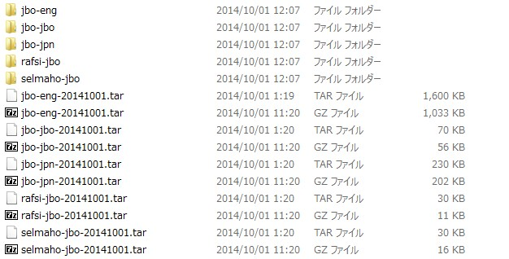
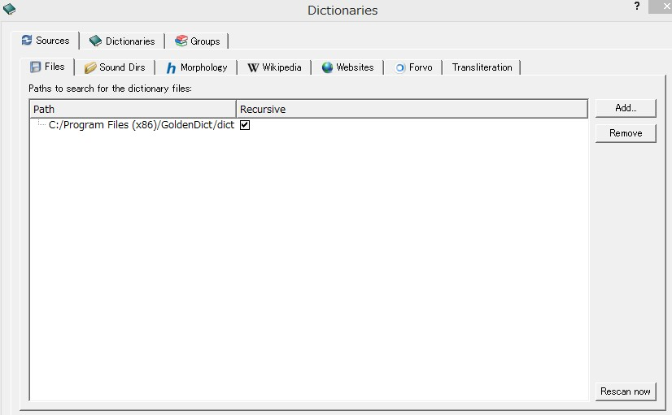
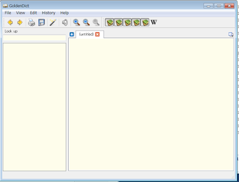

オフラインでロジバン辞書を使う
Goldendictというフリーソフトで、ロジバン辞書をオフラインで使えるようになります。Windows7/8で話をしていきます。
1. Goldendictのダウンロード
ここに飛んで、"32-bit Windows installer"というリンクをクリック。
おそらくリストの一番上にあります。32-bitですが、64-bitでも一応起動しています。
自動的にダウンロードが始まるので、適当なところにインストーラを保存してください。
2. Goldendictのインストール
インストーラを起動して、どこにインストールされるのかをチェックしつつ、ガシガシ進める。
僕の場合は、"C:Program Files(x86):GoldenDict"でした。
3. 辞書データの保存フォルダの作成
"C:Program Files(x86)\GoldenDict"に新しくフォルダを作ります。"dict"にしときましょう。
3. 辞書データのダウンロード
辞書データはla guskantが作成しています(ki'e guskant)。
ここに飛んで、"Basic Selection"の4つ (lojban, English, rafsi, selma'o)と、"Optional selection"の「日本語」をすべて適当なところにダウンロードする。 他言語の辞書も欲しい方はここでダウンロードしておいてください。
4. 辞書データの解凍
解凍していきます。たぶんOSの解凍ツールだと解凍できないので、各自解凍ツールを入れてください。僕は「7Zip」使ってます。
解凍が終わるとこんな感じになると思います。

解凍によって出来たフォルダをさっき作った"dict"フォルダにぶちこみます。
解凍作業を"dict"フォルダでしていたのなら、そのままでOKです。
5. 辞書データの導入
GoldenDictを開き、ツールバー"Edit"から"Dictionaries"をクリックします。
色々タブがありますが、SourcesタブのFilesタブを選択（おそらくデフォルトでそれが開いているはず)。
右側にある"Add"を押して、"dict"フォルダを選択します。Pathのところに指定したフォルダが無事表示されれば、 右下の"Rescan now"を押してから、"OK"を押す。

6. 完成・レイアウト調整
多分こんな感じになっているはずです。

少しレイアウトを整えていきます。ツールバーの"View"から "Show names in Dictionary Bar"にチェック。
これによって、辞書選択ボタンに辞書データ名が出てきます。
各セクションはドラッグ＆ドロップで好きなように変えれるのでお好みで調整しましょう。
8. ちょっとだけ操作方法
辞書データのボタンが凹んでいる状態がONです。WikipediaのボタンはOFFにしておきましょう。
GoldenDictでは複数タブが開けますし、辞書定義の単語をダブルクリックするとその語の定義に飛びます。
ちなみにデフォルトの設定だと、窓を消しただけでは、辞書はタスクバーに残っています。
また、便利なショートカットキーとしては、次の２つを覚えておくといいかもしれません：
- Ctrl + F11 + F11 ：辞書の呼び出し
- Ctrl + L ：検索テキストボックスにカーソルをうつす